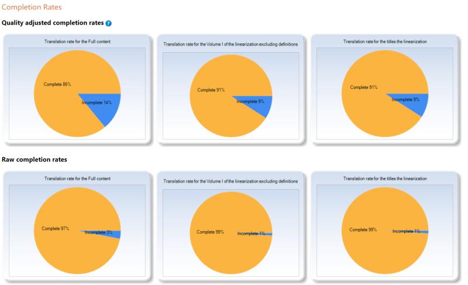

Translation Status and Remaining Translations
Overall completion rates
The home page for the translations contains some basic overall statistics for the completeness of the translations
Here we have information on raw completetion rates as well as completion rates adjusted for the stage of the translation
Completion Rates shown in the hierarchy
In addition to the overall completion rates, you could see how much of the translation is completed in a sub branch of the classification by checking the percentages shown in the hierarchy

The first percentage is the completion rate of the entity we are at. The second is the completion rate of the current entity and all of its descendants. They are both quality adjusted completion rates.
Remaining Translations
We show one of the 4 icons based on the remaining translations for an entity and its descendants. When you hover your mouse over these icons you'll see more details
- ✓ This icon shows that the item and all of its descendants are translated
-
R
This icon is shown when there are less than 25 phrases remaining in the whole subtree
(or when less than 10% is remaining for the subtrees in which we have less than 250 phrases).
When you click on the icon it will list the entities in which the translations are not complete so that you can directly visit these pages in the translation tool.
When the translations are nearly complete, it is helpful to see the remaining few phrases that have not been translated yet. This feature is also helpful when you need to see any new content that needs to be translated due to the updates made in the classification after translations are completed.
- ➔ This icon is shown if the descendants are all translated but there are some missing ones at this entity.
- This icon is shown when there are many (more than 25 or more than 10%) remaining translations left among the descendants. You need to open the children to see where the remaining translations are
These icons uses the numbers for the raw translations. So it does not take into account stages of translations